数字图像处理(6)：图像压缩
Last updated on December 30, 2025 pm
这是SJTU-CS3324《数字图像处理》课程的知识点整理系列。本文整理部分为“第 6 章：图像压缩”。
图像压缩引论 (Introduction of Image Compression)
- 核心目标: 图像压缩技术旨在减少表示一幅数字图像所需的数据量
- 图像压缩的必要性:
- 海量数据: 每天都有海量的信息在互联网上被存储、处理和传输
- 图像/视频为主: 由于这些信息大部分是图形或图像形式，它们对存储空间和通信带宽的需求是巨大的
- 商业价值: 能够在存储和传输前压缩数据的方法，具有重大的实践和商业意义
- 历史演进: 最初的研究集中于模拟视频的带宽压缩，但随着数字计算机和集成电路的发展，重心完全转向了数字压缩
- 这一领域的理论基础始于 20 世纪 40 年代香农（C. E. Shannon）等人提出的信息论
A. 图像压缩的可能性 (Possibility of Image Compression)
- 压缩的基本原理：去除数据中的冗余 (Redundant Data)
- 五种主要的数据冗余:
- 空间冗余 (Spatial Redundancy):
- 来源: 来自于图像中相邻像素之间的强相关性
- 例如，在一片蓝天中，一个像素的颜色值可以很好地通过其旁边的像素来预测
- 消除技术: 预测编码 (Predictive Coding)、变换编码 (Transform Coding)、行程编码 (Run-length Coding)
- 来源: 来自于图像中相邻像素之间的强相关性
- 时间冗余 (Temporal Redundancy):
- 来源: 存在于视频序列的相邻帧之间
- 例如，视频中大部分背景区域在前后两帧中是完全相同或非常相似的
- 消除技术: 运动估计 (Motion Estimation, ME)、运动补偿 (Motion Compensation, MC)、预测编码
- 来源: 存在于视频序列的相邻帧之间
- 编码冗余 (Coding Redundancy):
- 来源: 使用固定长度的自然二进制码来表示所有灰度级（或颜色）所造成的比特浪费
- 例如，无论一个灰度级出现频率多高或多低，都用 8 个比特来表示它
- 消除技术: 变长编码 (Variable-length Coding, VLC)，如哈夫曼编码、算术编码
- 来源: 使用固定长度的自然二进制码来表示所有灰度级（或颜色）所造成的比特浪费
- 心理视觉冗余 (Psychovisual Redundancy):
- 来源: 源于人类视觉系统 (HVS) 的生理缺陷，某些信息对于人眼来说相对不那么重要，或者根本无法察觉
- 例如，人眼对亮度细节比对颜色细节敏感得多
- 消除技术: 这是有损压缩 (Lossy Compression) 的基础，通过量化 (Quantization) 来实现
- 来源: 源于人类视觉系统 (HVS) 的生理缺陷，某些信息对于人眼来说相对不那么重要，或者根本无法察觉
- 知识冗余 (Knowledge Redundancy):
- 来源: 基于对图像内容的先验知识
- 例如，如果我们知道要压缩的是一张人脸，我们就可以用一个人脸模型来表示它，而无需传输所有像素
- 消除技术: 模型编码 (Model Coding)、语义通信 (Semantic Communication)
- 来源: 基于对图像内容的先验知识
- 空间冗余 (Spatial Redundancy):
B. 通用压缩系统模型 (General Compression System Model)
-
通用压缩系统模型:
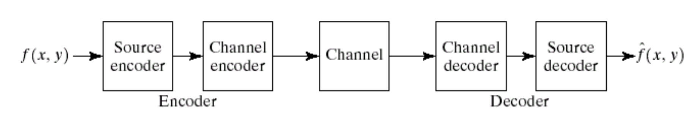
- 编码器 (Encoder):
- 信源编码器 (Source Encoder): 核心部分，负责移除输入数据的各种冗余
- 信道编码器 (Channel Encoder): 负责增加一定的冗余（如纠错码），以增强数据在有噪声信道中传输的抗干扰能力
- 解码器 (Decoder): 从信道接收数据，先进行信道解码，再进行信源解码，最终重建图像
- 编码器 (Encoder):
-
信源编码器 (Source Encoder)：分解为三个独立的操作模块
- 映射器 (Mapper):
- 功能: 负责将输入数据转换为一种更易于压缩的中间格式，其主要目标是减少空间和时间冗余，映射过程通常是可逆的
- 例子: 帧内/帧间预测、变换编码、混合编码、模型编码
- 量化器 (Quantizer):
- 功能: 根据一定的保真度准则，降低映射器输出数据的精度
- 例子: 将一个浮点数近似为一个整数
- 注意: 这是压缩系统中有损 (Lossy) 和不可逆信息损失的唯一来源
- 因此，在解码器中不存在“逆量化器”这个模块
- 符号编码器 (Symbol Coder):
- 功能: 为量化器的输出数据创建一个定长或变长编码，以消除编码冗余，它将量化后的符号序列映射为最终的二进制码流
- 例子: 哈夫曼编码、算术编码
- 映射器 (Mapper):
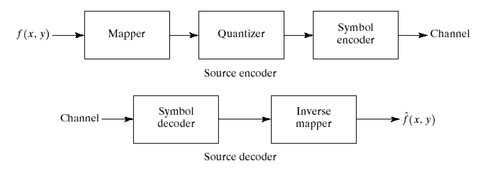
- 信源解码器 (Source Decoder): 编码器的逆过程，但不包含量化器
- 符号解码器 (Symbol Decoder): 从码流中解析出量化符号
- 逆映射器 (Inverse Mapper): 将符号转换回像素域，重建图像
C. 图像压缩方法分类 (Image Compression Methods Classification)
- 按保真度分类:
- 无损编码 (Lossless Coding): 解码后重建的图像与原始图像完全相同，压缩比通常较低
- 有损编码 (Lossy Coding): 重建图像只是原始图像的一个近似，存在一定失真，但压缩比可以非常高
- 按映射器类型分类:
- 波形编码 (Wave Coding): 使用预测
- 变换编码 (Transform Coding): DCT, DWT
- 模型编码 (Model Coding)
图像压缩的理论基础 (Theoretical Fundamentals of Image Compression)
A. 无损图像压缩的理论基础 (Theoretical Fundamentals of Lossless Image Compression)
-
无噪编码定理 (Noiseless Coding Theorem): 也被称为香农第一定理 (Shannon’s first theorem)
- 核心内容: 定义了对于一个给定的信源，其每个符号所需要的平均码长 的理论最小值
- 熵 (Entropy): 衡量了一个信源所包含的平均信息量，或者说，信源的不确定性
- 对于一个包含 个符号 ，每个符号出现概率为 的信源，其熵的定义为：
- 熵的单位是 比特/符号 (bits/symbol)
- 当所有符号等概率出现时，信源的不确定性最大，熵也达到最大值
- 定理结论: 我们可以设计一种编码方式，使得平均码长 无限地接近于信源的熵 ，但不可能小于它，即
-
衡量压缩性能的指标:
- 编码效率 (Coding Efficiency): 表示实际的平均码长 在多大程度上接近了理论极限
- 效率越高，说明编码越好， 的最大值为 1
- 编码冗余 (Coding Redundancy): 衡量了由于编码方式不够理想而浪费掉的比特数
- 一个最优的编码，其冗余为 0
- 压缩比 (Compression Ratio):
其中 是原始图像的平均比特率， 是压缩后图像的平均比特率
- 例如，一个 8-bit 的灰度图（），如果压缩后平均每个像素只需要 2 个比特，，则压缩比
- 无损压缩的最大压缩比: 由于无损压缩的平均码长 （即 ）最小只能达到 ，因此无损压缩的理论最大压缩比为：
- 编码效率 (Coding Efficiency): 表示实际的平均码长 在多大程度上接近了理论极限
B. 有损图像压缩的理论基础 (Theoretical Fundamentals of Lossy Image Compression)
- 失真度量 (Distortion Measure): 用于衡量重建图像 与原始图像 之间的差异，一般使用均方误差 (Mean Square Error, MSE)
- 率失真理论 (Rate-Distortion Theory): 描述了在允许一定失真度 的情况下，一个噪声信道传输该信源所需的最小平均比特率
- 率失真函数 : 是一个关于 的单调递减函数
- 允许的失真 越大，所需要的比特率 就越低（压缩率越高）
- 当失真 为 0 时（无损压缩），所需要的比特率 等于信源的熵
- 率失真函数 : 是一个关于 的单调递减函数
- 高斯信源的例子: 对于一个方差为 的高斯分布信源，其率失真函数为：
熵编码 (Entropy Coding)
- 目标: 移除编码冗余
- 核心思想: 使用变长编码 (Variable-length code)
- 为出现概率高的符号分配较短的码字，为出现概率低的符号分配较长的码字
- 这样，整个符号序列的平均码长就会比使用定长编码要短，从而达到压缩的目的
A. 哈夫曼编码 (Huffman Coding)
-
简介: 由 David A. Huffman 在 1952 年提出，是最流行的用于消除编码冗余的技术
-
编码流程:
- 第一步: 信源缩减 (Source Reduction)
- 排序: 将所有信源符号按其出现概率从高到低进行排序
- 合并: 选取概率最低的两个符号，将它们合并成一个新的“复合符号”，其概率是原来两个符号概率之和
- 迭代: 将这个新符号与其他剩余符号一起，重新按概率排序，然后重复步骤 2
- 终止: 持续这个过程，直到最后只剩下两个符号为止
- 第二步: 码字分配 (Code Assignment)
- 初始分配: 为最后剩下的两个符号分别分配码字 0 和 1
- 反向回溯: 从最后一步的缩减结果开始，反向工作回原始信源：每当一个复合符号被拆分为原来的两个符号时，就在复合符号的码字后面分别追加 0 和 1，作为这两个符号的新码字
- 完成: 当回溯到原始信源列表时，每个原始符号都获得了其唯一的哈夫曼码
- 第一步: 信源缩减 (Source Reduction)
-
例题:
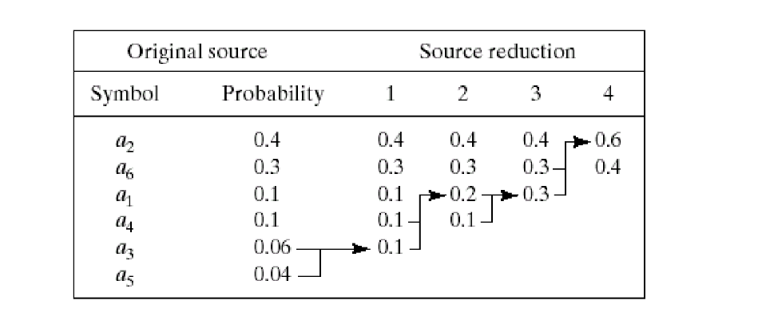
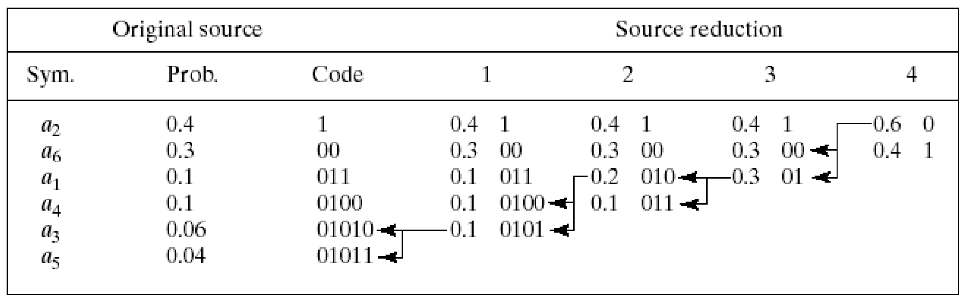

- 性能: 平均码长接近信源的熵（理论下限），编码效率很高（接近 1）
- 特性:
- 是一种最优的变长编码方法，即当对信源符号进行逐个独立编码时，能产生最小的平均码长
- 是一种即时唯一可解码的块编码 (Instantaneous Uniquely Decodable Block Code)
- 即时性/前缀码特性: 任何一个符号的码字都不是另一个符号码字的前缀
- 这保证了解码器在接收到码流时，可以立即解码出每一个符号，而无需向后看更多的比特
- 唯一可解码: 任意一串码流只能被以唯一的方式解码
- 即时性/前缀码特性: 任何一个符号的码字都不是另一个符号码字的前缀
B. 其他近似最优的变长编码 (Other near optimal variable length codes)
- 问题: 对于有 256 个灰度级的典型图像，构造一个最优的哈夫曼编码需要进行 254 次信源缩减，过程非常繁琐
- 解决方案: 可以牺牲一点编码效率来换取编码构造的简便性，以下是三种近似最优的方法
- 截断哈夫曼编码 (Truncated Huffman Coding): 只对出现概率最高的 个符号进行标准的哈夫曼编码，而将其余所有低概率符号合并为一个特殊的前缀符号
- 对这个前缀符号和 个高概率符号一起进行哈夫曼编码
- 所有低概率符号最终的编码就是：前缀符号的码字 + 一个定长的索引码
- 下图中，高概率符号是 到 ，低概率符号是 到
- 二元移位码 (Binary Shift Code) & 哈夫曼移位码 (Huffman Shift Code): 将按概率排好序的符号分成几个大小相等的块
- 只对其中一个参考块中的符号进行编码（定长二进制或哈夫曼编码），其他块中的符号通过在参考块码字前添加特殊的上移或下移符号来表示
- 当解码器解码出上移或下移符号时，它会从预定义的参考块开始，切换到上一个块或下一个块
- 在哈夫曼移位码中，移位符号作为一个特殊的符号，和参考块里的所有符号一起进行哈夫曼编码
- 截断哈夫曼编码 (Truncated Huffman Coding): 只对出现概率最高的 个符号进行标准的哈夫曼编码，而将其余所有低概率符号合并为一个特殊的前缀符号
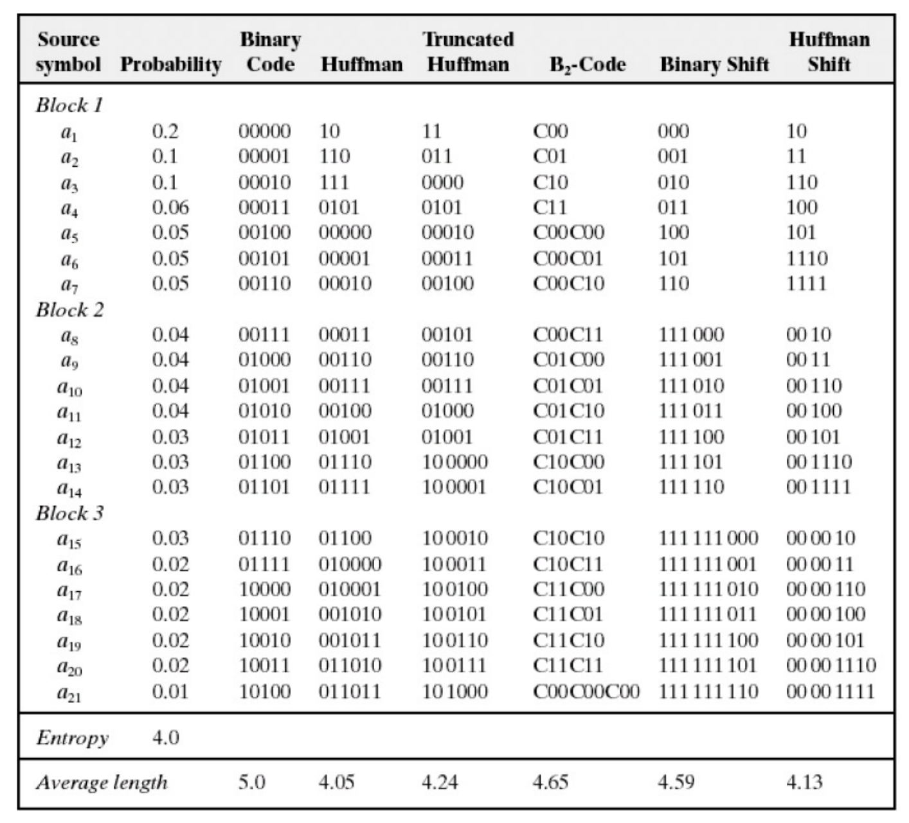
C. 算术编码 (Arithmetic Coding)
- 思想: 与哈夫曼编码（一种块编码，每个符号对应一个码字）完全不同，算术编码是一种非块编码
- 它不为单个符号分配码字，而是为整个符号序列分配一个唯一的、介于 区间的浮点数
- 编码过程:
- 初始化: 将编码区间设为
- 区间划分: 根据信源符号的概率分布，将当前区间划分为若干个子区间，每个子区间的宽度正比于对应符号的概率
- 迭代更新: 读入序列中的下一个符号，选择该符号对应的子区间作为新的编码区间
- 重复: 对新的编码区间重复步骤 2 和 3，直到处理完所有符号
- 输出: 最终得到的编码区间会非常小，选择这个最终区间内的任何一个浮点数，将其转换为二进制小数，就是整个序列的编码结果


- 特点:
- 编码效率更高: 算术编码的平均码长可以无限逼近信源的熵，通常比哈夫曼编码的效率更高，尤其是在符号概率分布非常不均衡时
- 无一一对应: 源码符号和码字之间没有一对一的固定关系
- 实现更复杂: 相对于哈夫曼编码，算术编码的实现和计算复杂度更高
预测编码 (Predictive Coding)
预测编码是映射器 (Mapper) 的一种具体实现方式。它的核心任务是将原始的、具有强相关性的图像数据，转换为一种冗余更低、更适合压缩的表示形式。
- 核心思想: 不直接编码像素值本身，而是编码实际值与预测值之间的差值
预测编码的框架 (Framework of Predictive Coding)
- 编码器 (Encoder):
- 预测器 (Predictor): 根据重建的上一个像素值 生成对当前像素的预测值
- 求差: 计算输入图像 与预测值 的差，得到预测误差
- 量化器 (Quantizer): 对预测误差 进行量化，得到量化后的误差 ，这是信息损失的来源
- 符号编码器 (Symbol Encoder): 对量化后的误差 进行熵编码（如哈夫曼编码），生成最终的压缩码流
- 本地解码环路: 编码器内部包含一个解码环路，量化后的误差 与预测值 相加，得到重建后的像素值
- 这个 会被送回预测器，作为下一次预测的依据
- 这是为了确保编码器和解码器使用的参考像素完全一致，避免误差累积和失配问题
- 解码器 (Decoder):
- 符号解码器 (Symbol Decoder): 从码流中解码出量化后的误差
- 求和: 将解码出的误差 与预测值 相加，得到重建后的像素值 ，并作为最终的输出
- 预测器 (Predictor): 使用与编码器完全相同的预测逻辑，根据已解码的像素生成对当前像素的预测值
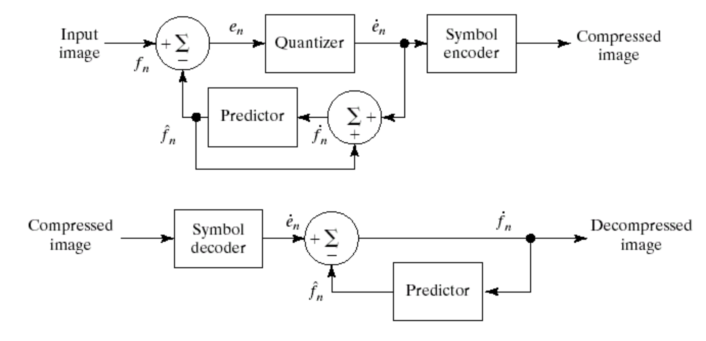
帧内预测编码 (Intra-frame Predictive Coding)
这是预测编码在静态图像中的应用，旨在消除空间冗余。
- DPCM (差分脉冲编码调制 - Differential Pulse Code Modulation): 对于一个具有强相关性的数据序列，不直接编码每个数据本身，而是编码当前数据与上一个数据（或预测值）之间的差值
- 帧内预测的预测器 (Predictor of intra-frame prediction): 预测器 的值由当前像素 周围的、已经完成编解码的邻近像素（通常是左侧、上方、左上方的像素）的线性或非线性组合来确定
- 例如， 只使用上方像素
- 使用上方和左侧像素的平均值
- 更复杂的预测器，会根据局部梯度来动态选择使用哪个邻近像素进行预测，或使用神经网络进行预测
帧间预测编码 (Inter-frame Predictive Coding)
这是预测编码在视频压缩中的应用，旨在消除时间冗余。
-
核心思想: 用前一帧（参考帧）来预测当前帧，只对预测不准的差异部分进行编码
-
关键技术:
- 运动估计 (Motion Estimation - ME):
- 目标: 找到当前帧中的某个图像块在参考帧中的最佳匹配位置
- 实现: 通常使用块匹配算法 (Block Matching Algorithm - BMA)
- 将当前帧划分为若干 子块
- 对于每个子块，在参考帧的一个搜索区域内进行搜索，找到与之最相似的匹配块
- 输出: 连接当前块中心和最佳匹配块中心的位移向量，即为运动向量 (Motion Vector - MV)
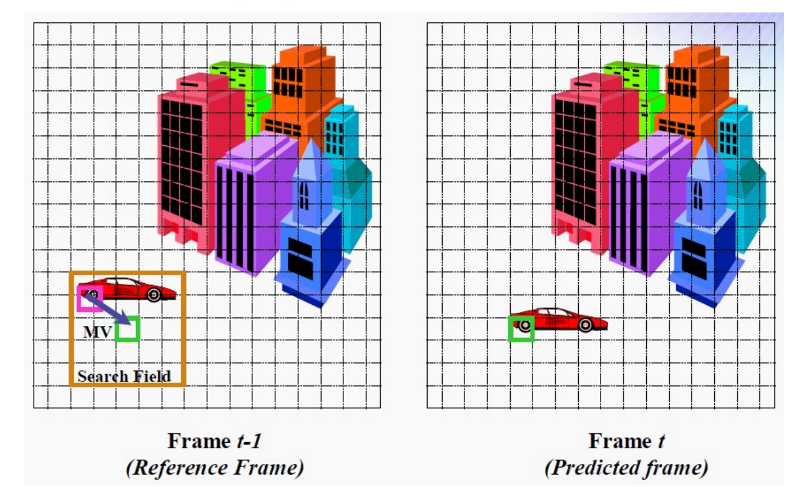
- 运动补偿 (Motion Compensation - MC):
- 目标: 利用计算出的运动向量（MVs），来构建一个对当前帧的预测帧
- 实现: 根据 MV，将参考帧中对应匹配块的像素，搬移到当前帧的相应位置，形成预测图像
- 作用: 经过运动补偿后的预测，其预测误差会比简单的帧间差值小得多
- 运动估计 (Motion Estimation - ME):
-
编码流程:
- 对象分割: 将视频帧分为静止对象和运动对象
- 运动估计 (ME): 对运动对象，通过块匹配算法找到它们的运动向量 (MVs)
- 运动补偿 (MC): 使用 MVs 构建预测帧
- 预测编码: 计算当前帧与预测帧之间的预测误差帧
- 最终编码内容: 编码器最终需要传输给解码器的是预测误差帧（经过 DCT、量化等处理）和运动向量 (MVs)
-
视频编码中的帧类型:
- I帧 (Intra-coded picture): 帧内编码帧
- 不依赖任何其他帧，独立进行编码（类似 JPEG）
- 压缩率最低，但可以作为随机访问的基准点
- P帧 (Predicted picture): 预测编码帧
- 只利用其前面的 I 帧或 P 帧来进行预测
- B帧 (Bidirectionally-predicted picture): 双向预测编码帧
- 同时利用其前面和后面的 I 帧或 P 帧进行预测
- 可以获得最高的压缩率
- I帧 (Intra-coded picture): 帧内编码帧
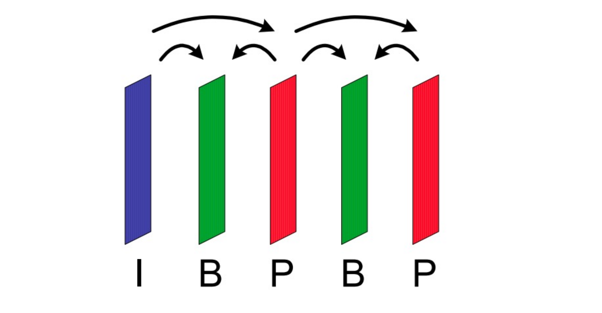
变换编码 (Transform Coding)
变换编码也是映射器 (Mapper) 的一种核心实现方式。它旨在通过一种可逆的线性变换，将图像数据从空间域映射到变换域，以减少空间冗余。
- 核心思想: 将图像像素分解为一组相关性较低的变换系数 (transform coefficients)
- 对于绝大多数自然图像，一个好的变换能将图像的绝大部分信息集中到少数几个变换系数上，这些系数通常对应于图像的低频成分
- 变换后，大量的系数会具有很小的幅度（接近于零），这些系数对图像视觉质量的贡献微乎其微
- 因此，我们可以对这些小幅度的系数进行粗略的量化，甚至直接丢弃，而只对少数几个大幅度的系数进行精细的量化和编码
- 通过这种方式，可以在很小的图像失真代价下，显著减少需要编码的数据量，从而实现高压缩率
变换编码系统框架 (Transform Coding System)
- 编码器 (Encoder):
- 子图分解 (Subimage Decomposition): 将输入的 图像划分为若干个不重叠的 子块
- 前向变换 (Forward Transform): 对每一个子块独立地进行二维线性变换（如 DCT），得到一个 的变换系数块
- 量化 (Quantization): 对变换系数块中的每一个系数进行量化（这是有损压缩和信息损失的主要来源）
- 符号编码 (Symbol Coding): 对量化后的系数进行熵编码（如哈夫曼编码），生成最终的压缩码流
- 解码器 (Decoder):
- 符号解码 (Symbol Decoder): 从码流中解码出量化后的变换系数
- 反向变换 (Inverse Transform): 对每一个系数块进行反向变换，将其从变换域恢复到空间域，得到重建的 像素块
- 图像合并 (Merge): 将所有重建的子块拼接起来，构成最终的解压缩图像

变换编码的关键设计选择
- 变换类型的选择 (Transform Selection):
- DFT: 理论基础，但有复数运算和边界效应问题
- WHT: 计算快（无乘法），但能量聚集能力一般
- DCT: 实际应用中的最佳选择，它在能量聚集能力（接近理论最优的 KLT）和计算复杂度之间取得了平衡
- 子图尺寸的选择 (Subimage Size Selection):
- 常用尺寸: 8×8 和 16×16 是最常用的块大小
- 尺寸权衡:
- 太小: 相邻块之间的相关性没有被充分利用，影响压缩效率
- 太大: 无法很好地适应图像的局部统计特性变化，且计算复杂度增加
- 系数选择 (Coefficients Selection):
- 阈值采样 (Threshold Sampling): 只保留幅度大于某个阈值的系数
- 分区采样 (Zonal Sampling): 预先定义一个区域（通常是左上角的低频区域），只保留这个区域内的系数
- 自适应采样 (Adaptive Sampling): 根据每个块自身的内容特性，动态地选择保留哪些系数
- 比特分配 (Bit Allocation): 包括对变换系数进行截断、量化和编码的整个过程，目标是用有限的比特数来尽可能精确地表示最重要的信息
- 补充知识: 可伸缩视频编码 (Scalable Video Coding, SVC)
- 是一种允许从同一个压缩码流中，根据网络带宽、设备处理能力或用户需求，提取出不同分辨率、帧率或质量等级的视频的技术
Mini Chapter: JPEG 压缩 (JPEG Compression)
JPEG 压缩的核心流程 (JPEG Compression Steps)

第一步: 图像分块与 DCT 变换 (Block Partitioning & DCT)
- 分块: 将输入的图像（通常是 Y, Cb, Cr 三个分量分别处理）分割成不重叠的 8x8 像素块
- 电平偏移: 为了使 DCT 计算更高效，将每个像素值（范围）减去 128，使其范围变为 [-128, 127]
- DCT: 对每一个 8x8 的像素块进行二维离散余弦变换 (2D-DCT)，得到一个 8x8 的频率系数矩阵
- 矩阵左上角的第一个系数 F(0,0) 称为 DC 系数 (直流分量)，它代表了整个 8x8 块的平均亮度
- 其余的 63 个系数称为 AC 系数 (交流分量)，它们代表了图像块在不同频率和方向上的细节信息
第二步: 量化 (Quantization)
- 为什么 (Why?): 这是 JPEG 有损压缩的关键步骤，其理论依据是心理视觉冗余
- 人眼对亮度在较大范围内的微小变化（低频）很敏感，但对高频亮度变化的精确强度不敏感
- 怎么做 (How?):
- 取出一个 8x8 的 DCT 系数矩阵
- 准备一个 8x8 的量化表 (Quantization Matrix)
- 这个表是预定义的（也可以自定义），表中的值对应了每个频率系数的量化步长
- 通常，左上角（低频）的量化步长小，右下角（高频）的量化步长非常大
- 将 DCT 系数矩阵中的每一个系数 ，逐点除以量化表中对应位置的量化步长 ，然后四舍五入取整
- 结果:
- 绝大多数高频 AC 系数，由于其本身数值小，再除以一个大的量化步长，结果会变成 0
- 低频系数被保留了更多的精度
- 通过调整量化表中的值（通常通过一个“质量因子”来整体缩放），可以控制压缩比和图像质量
第三步: Zig-Zag 扫描 (Zig-Zag Scan)
- 为什么 (Why?): 经过量化后，8x8 的系数矩阵中出现了大量的 0，并且这些 0 主要集中在右下角的高频区域
- Zig-Zag 扫描的目的是将这些连续的零聚集在一起，以便于后续的行程编码
- 怎么做 (How?): 按照“之”字形的路径，将 8x8 的量化系数矩阵重新排列成一个 1x64 的一维向量
- 这样，低频系数被排在向量的开头，而大量连续的零被排在了向量的末尾

第四步: DC/AC 系数的差分与行程编码 (DPCM for DC & RLE for AC)
- DPCM for DC:
- 原因: 相邻的 8x8 图像块的平均亮度（DC 系数）通常非常接近，存在相关性
- 方法: 不直接编码每个块的 DC 系数，而是编码当前块 DC 系数与前一个块 DC 系数的差值 (Difference)
- 这个差值通常很小，用更少的比特就可以表示，这就是差分脉冲编码调制 (DPCM)
- RLE for AC:
- 原因: Zig-Zag 扫描后的 AC 系数向量中，有大量连续的零
- 方法: 使用行程编码 (Run-Length Encoding, RLE) 来高效地表示这些连续的零
- 编码器将 AC 系数流转换为一系列 (skip, value) 数对，其中 skip 表示连续零的个数，value 表示下一个非零系数的值
- 特殊码: (0,0) 被用作一个特殊的块结尾符 (End-of-Block, EOB)，表示该块内剩余的 AC 系数全为零
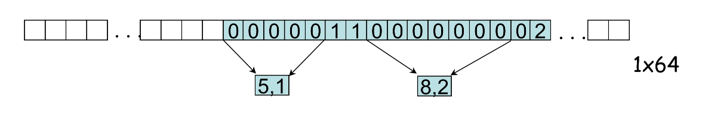
第五步: 熵编码 (Entropy Coding)
这是最后一步无损压缩，通常使用哈夫曼编码。
- DC 系数编码:
- DPCM 得到的 DC 差值被分为两部分编码：(
SIZE,VALUE) SIZE表示表示这个差值需要多少个比特- 例如，-8 和 9 都需要 4 个比特，它们的
SIZE都是 4 SIZE本身使用一个专用的 DC 哈夫曼码表进行编码（左下表）
- 例如，-8 和 9 都需要 4 个比特，它们的
VALUE是差值的二进制表示，由Size_and_Value表得到
- DPCM 得到的 DC 差值被分为两部分编码：(

- AC 系数编码:
- RLE 得到的 (
RunLength,Value) 数对也被分为两部分：S1 = (RunLength/SIZE)和S2 = (Value)RunLength是连续零的个数，SIZE表示编码 AC 系数所需的比特数- 这个
(RunLength, SIZE)组合后使用一个专用的 AC 哈夫曼码表进行编码（下表）
Value是该 AC 系数的二进制表示，由Size_and_Value表得到
- RLE 得到的 (
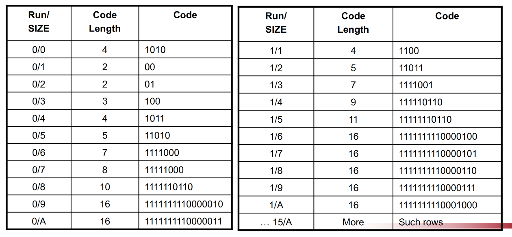
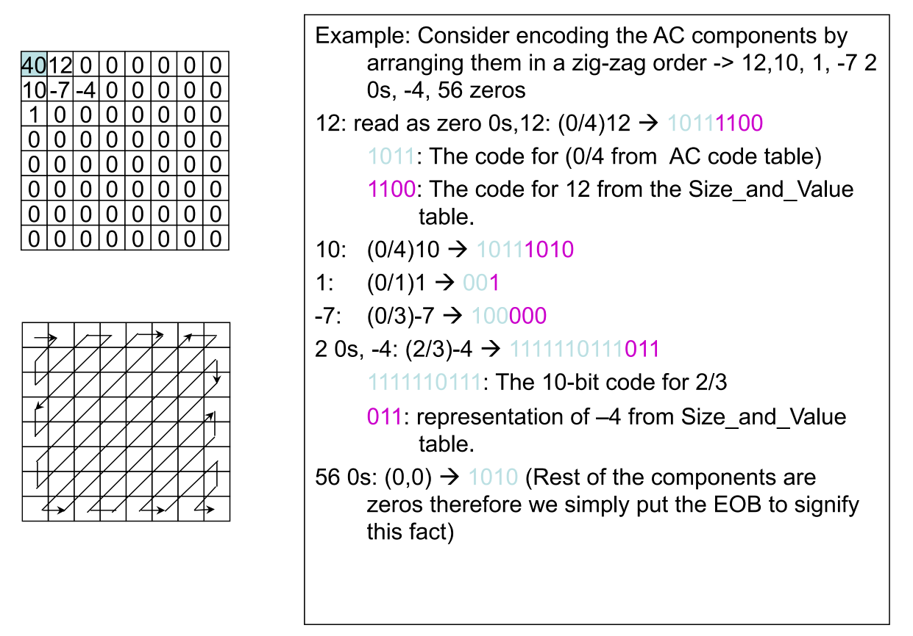
JPEG 模式 (JPEG Modes)
顺序模式 (Sequential Mode)
- 定义: 这是最基本、最常用的 JPEG 模式
- 图像按照从左到右、从上到下的顺序，进行一次完整扫描来完成编码
- 基线顺序模式 (Baseline Sequential Mode):
- 我们之前详细讨论的，包含“DCT -> 量化 -> Zig-Zag -> 熵编码”这一完整流程的，就是基线顺序模式
- 基线模式只支持 8 位的图像深度，而不支持更高（如 12 位）的图像
- 特点:
- 实现简单，编解码速度快
- 解码时必须从头到尾接收完所有数据才能显示完整图像
无损模式 (Lossless Mode):
- 定义: 这是一种可以实现真正无损 (Truly lossless) 压缩的模式，即解压后的图像与原始图像在像素级别上完全一致
- 核心机制:
- 它不使用 DCT 和量化，因为量化是导致信息损失的根源
- 它采用的是一种预测编码 (Predictive Coding) 机制
- 工作流程 (Predictive Difference):
- 预测: 对于图像中的当前像素 X，编码器从 7 种可能的预测器中选择一个最佳的预测器
- 这个预测器通过其 3 个已编码的邻近像素（A: 左边, B: 上边, C: 左上）的组合来预测 X 的值
- 7种预测器，例如
P1 = A,P2 = B,P7 = (A+B)/2等
- 计算差值: 计算实际值 X 和预测值之间的预测差 (Predictive Difference)
- 编码: 将所选用的预测器（的编号）和这个预测差一起进行哈夫曼编码
- 预测: 对于图像中的当前像素 X，编码器从 7 种可能的预测器中选择一个最佳的预测器
- 特点:
- 能够完美重建原始图像
- 压缩比远低于有损模式，通常在 2:1 左右
渐进模式 (Progressive Mode)
- 定义: 这种模式主要用于网络传输等场景
- 它先以一个较低的比特率快速传输一个粗糙的、模糊的图像版本，然后在后续的传输中逐步地对其进行改善和细化，直到显示完整质量的图像
- 实现方式: 渐进模式通过多次扫描同一个图像来实现，每次扫描都增加一些信息。主要有两种技术：
- 频谱选择 (Spectral Selection):
- 思想: 按频率分批次传输
- 流程:
- 首先，只发送每个 8x8 块的 DC 系数和前几个低频 AC 系数，解码端只能恢复出图像的一个严重块化的缩略图
- 之后，逐步发送更高频率的 AC 系数，图像的细节被不断补充和丰富
- 逐次逼近 (Successive Approximation):
- 思想: 按比特位分批次传输
- 流程: 将所有 DCT 系数看作二进制数
- 首先，只发送所有系数的最高几个比特位 (MSB)，解码端得到的是一个精度很低的粗略图像
- 之后，逐步发送这些系数的下一个比特位，不断逼近和修正系数的精确值，使图像质量逐步提升
- 频谱选择 (Spectral Selection):
分层模式 (Hierarchical Mode):
- 定义: 这种模式将同一张图像编码成多个不同分辨率的版本，并存储在同一个码流中
- 功能: 支持多分辨率访问
- 解码器可以根据自身的显示能力或需求（例如，生成一个小的缩略图），只解码到它所需要的分辨率层级，而无需解码完整的、最高分辨率的图像数据
- 实现方式: 一个 3 级分层编码器的例子
- 原始图像 首先被下采样 2 倍得到 ，再下采样 2 倍得到
- 编码:
- 从最低分辨率的 开始，对其进行编码（如顺序模式），得到码流
- 然后，将 解码并上采样，作为对 的预测，只对它们之间的差值进行编码，得到码流
- 以此类推，最终得到 , , 三个层级的码流
- 解码:
- 解码器可以只解码 得到一个低分辨率图像
- 或者解码 和 ，并将它们合并，得到一个中等分辨率的图像
- 或者解码所有码流，得到全分辨率图像
小波编码 (Wavelet Coding)
小波编码系统框架
小波编码的系统框架与变换编码非常相似。
- 编码器 (Encoder):
- 小波变换 (Wavelet Transform): 对整张图像（而不是分块）进行二维离散小波变换 (DWT)，得到不同尺度和方向的子带系数
- 量化 (Quantizer): 对小波系数进行量化
- 符号编码 (Symbol Encoder): 对量化后的系数进行熵编码，生成压缩码流
- 解码器 (Decoder):
- 符号解码 (Symbol Decoder): 解码码流，恢复量化后的小波系数
- 逆小波变换 (Inverse Wavelet Transform): 对系数进行逆变换，重建图像
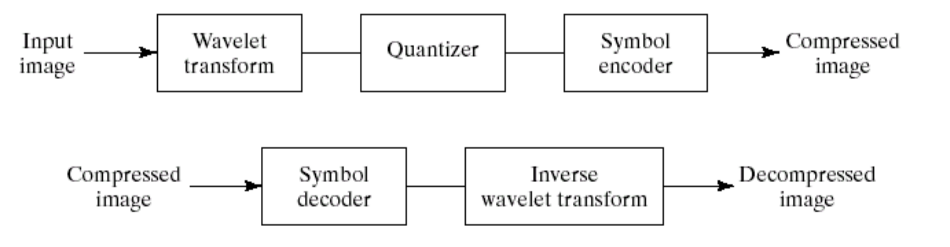
核心思想 (Basic Ideas)
- 去相关性 (Decorrelation): 小波变换能够有效地解除图像像素之间的相关性
- 相比于原始的高度相关的像素，对这些去相关后的小波系数进行编码会更加高效
- 能量聚集 (Energy Packing): 与 DCT 类似，小波变换的基函数也具有很强的能量聚集能力
- 它能将图像中大部分重要的视觉信息，集中到少数几个大幅度的小波系数中
- 压缩原理: 变换后，其余大量的、代表细节的小波系数幅度都很小
- 这些小系数可以被粗略地量化，或者直接截断置零 (truncated to 0)，而对最终的图像失真影响很小
小波编码 vs. 变换编码 (JPEG)
- 变换基础: 传统 JPEG 基于分块的 DCT；小波编码（如 JPEG2000）基于对整张图像的小波变换
- 块效应 (Blocking Artifact):
- 由于 JPEG 是对 8x8 的图像块独立进行压缩的，当压缩率很高时，块与块之间的边界会变得非常明显，形成马赛克一样的“块效应”
- 小波变换是对整张图像进行处理，不存在分块的概念，因此它从根本上避免了块效应
- 在高压缩比下，小波编码产生的失真通常表现为整体的平滑和模糊，视觉上比块效应更容易接受
图像与视频压缩标准 (Image & Video Compression Standards)
国际图像编码标准概览 (International Image Coding Standards)
- 静态图像标准:
- JPEG: (1992) 最经典的静态图像编码标准
- JPEG-LS: (1999) JPEG 的无损/近无损编码标准
- JPEG2000: (2000) 基于小波变换（DWT）的新一代静态图像编码标准，性能优于 JPEG
- JBIG1/JBIG2: 主要用于二值图像（如传真、扫描文档）的编码标准
- 视频编码标准: 这是一个由 ITU-T (国际电信联盟电信标准化部门) 的 H.26x 系列（主要面向实时通信，如视频会议）和 ISO/IEC (国际标准化组织/国际电工委员会) 的 MPEG-x 系列（主要面向存储和流媒体，如 VCD, DVD）共同推动发展的领域
- 早期标准: H.261, H.263, MPEG-1, MPEG-2
- 里程碑式的合作: H.262 与 MPEG-2 (DVD标准), H.264 与 MPEG-4 Part 10/AVC，这两次合作产生了极其成功的视频编码标准
- 新一代标准:
- H.265 / HEVC (High Efficiency Video Coding): 相比 H.264，在同等画质下码率节省约 50%
- H.266 / VVC (Versatile Video Coding): 最新一代标准，目标是再节省 50% 码率
- 其他重要标准:
- Google: VP8, VP9, AV1 (作为开放媒体联盟 AOMedia 的一部分，免版税)
- 中国: AVS, AVS2, AVS3 (中国自主的音视频编码标准)
- 视频编码的“摩尔定律”: 大约每隔十年，新一代视频编码标准就能在同等主观画质下，将码率（数据量）降低一半，即压缩率提高一倍
成功标准的要求 (Requirements of A Successful Standard)
一个成功的压缩标准需要满足以下要求：
- 创新性 (Innovation)
- 竞争性 (Competition)
- 独立性 (Independence): 与传输和存储介质无关
- 兼容性 (Compatibility): 这是至关重要的一点，包括：
- 前向兼容: 新设备应能解码旧标准的码流（如 H.263 设备能解 H.261）
- 后向兼容: 旧设备应能以某种方式处理新标准的信号（如黑白电视能接收彩色信号，只是显示为黑白）
- 上向兼容: 高级设备能接收低级信号（如 HDTV 能接收 SDTV）
- 下向兼容: 旧接收器应能接收并解码新一代标准码流中的基本层
混合编码框架 (Framework of Hybrid Coding)
现代几乎所有的主流视频编码标准（如 H.26x 系列, MPEG 系列）都基于一个统一的混合编码框架。这个框架巧妙地结合了预测编码和变换编码的优点。
- 核心思想:
- 使用帧间预测 (Inter-prediction) 或帧内预测 (Intra-prediction) 来消除时间或空间冗余，得到预测误差
- 对这个预测误差进行变换编码（DCT/DST），以消除其内部的空间冗余
- H.261 框架: 这是一个经典的混合编码器框图
- 输入图像与预测图像相减，得到预测误差
- 对预测误差进行 DCT -> 量化(Q)
- 对量化后的系数进行变长编码(VLC)，送入缓冲区(Buf)输出码流
- 内部解码环路: 量化后的系数经过反量化(IQ) -> 反变换(IDCT)，得到重建的预测误差
- 重建的预测误差与预测图像相加，得到重建的当前帧
- 这个重建帧会经过一个环路滤波器(Loop Filter)（用于去除块效应等瑕疵），然后存起来作为下一次预测的参考帧
- 运动估计/补偿 (ME/MC) 模块负责生成预测图像
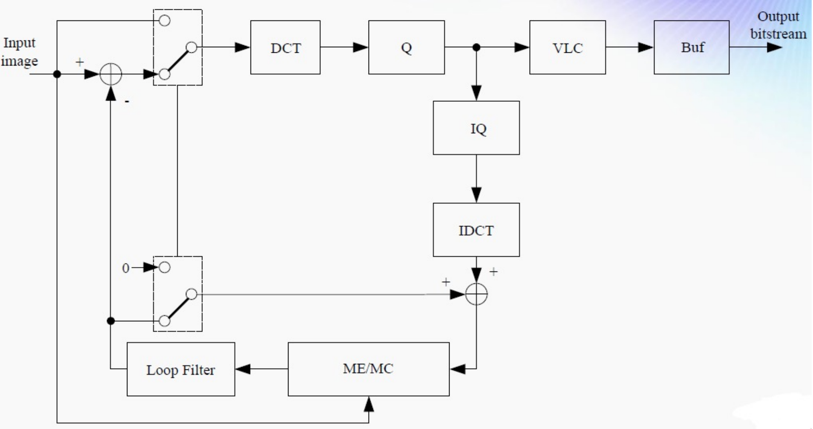
- 深度学习驱动的压缩: 使用端到端 (End-to-end) 的深度学习框架来替代传统视频压缩中的各个模块（如运动估计、变换、熵编码等），是该领域最新的研究方向
参考资料
本文参考上海交通大学电子工程系《数字图像处理》课程 CS3324 闵雄阔老师的 PPT 课件整理。